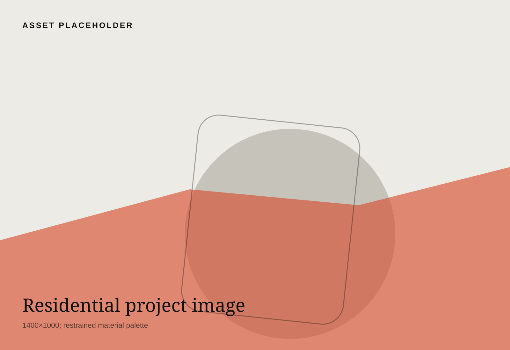
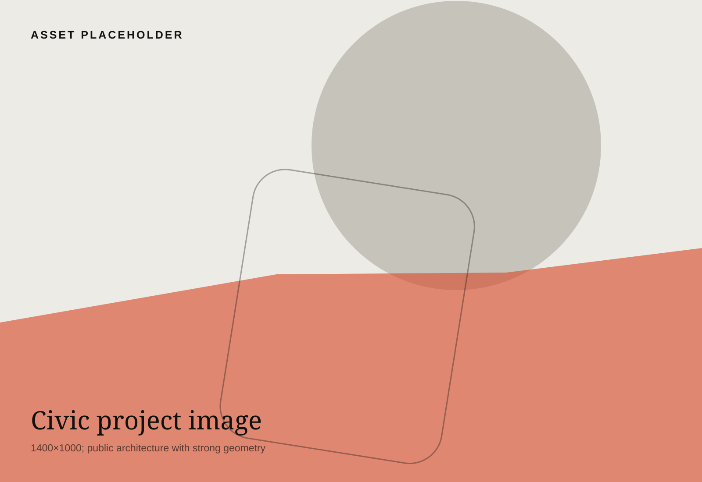

Studio
A small office for long projects.
We prefer a precise building to a loud one.
Practice
Monolith is an architecture studio founded in 2017 and working between Copenhagen and London. Our projects range from private houses to civic rooms and adaptive reuse.
Method
We begin with structure, daylight, sequence, weather, and what is already there. Representation follows the building rather than the other way around.
Team
12 architects, 2 model makers, 1 studio manager, and a rotating group of collaborators.

